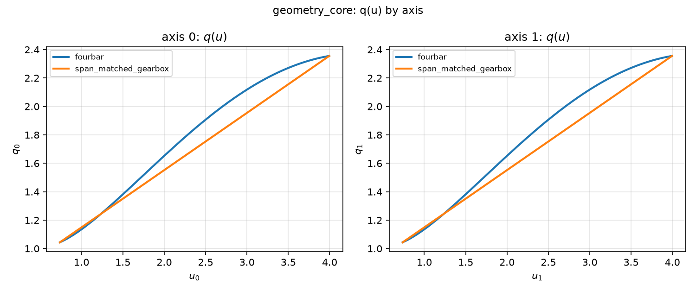
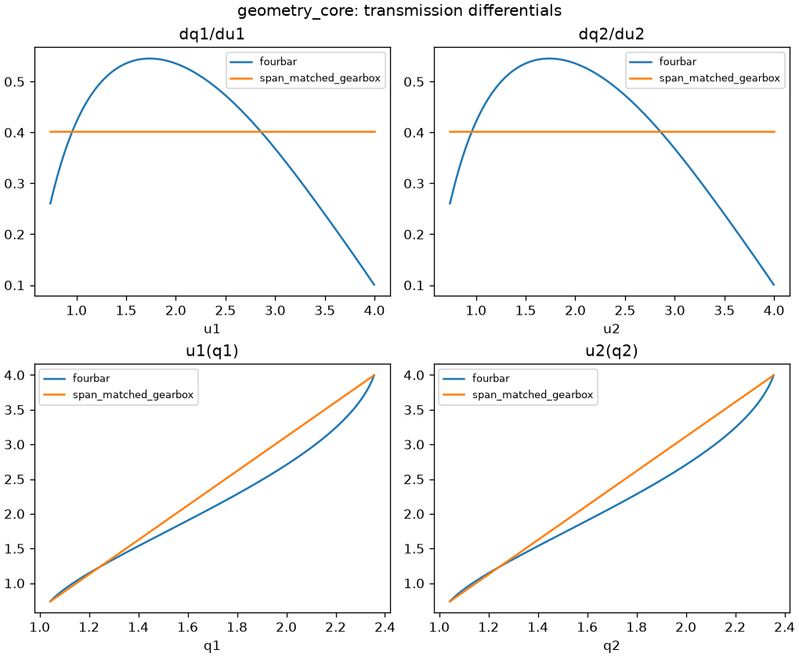
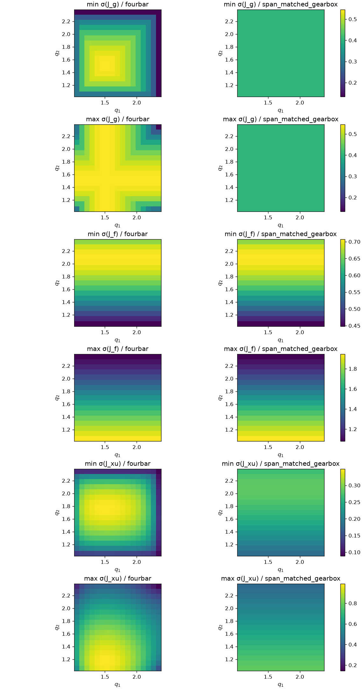
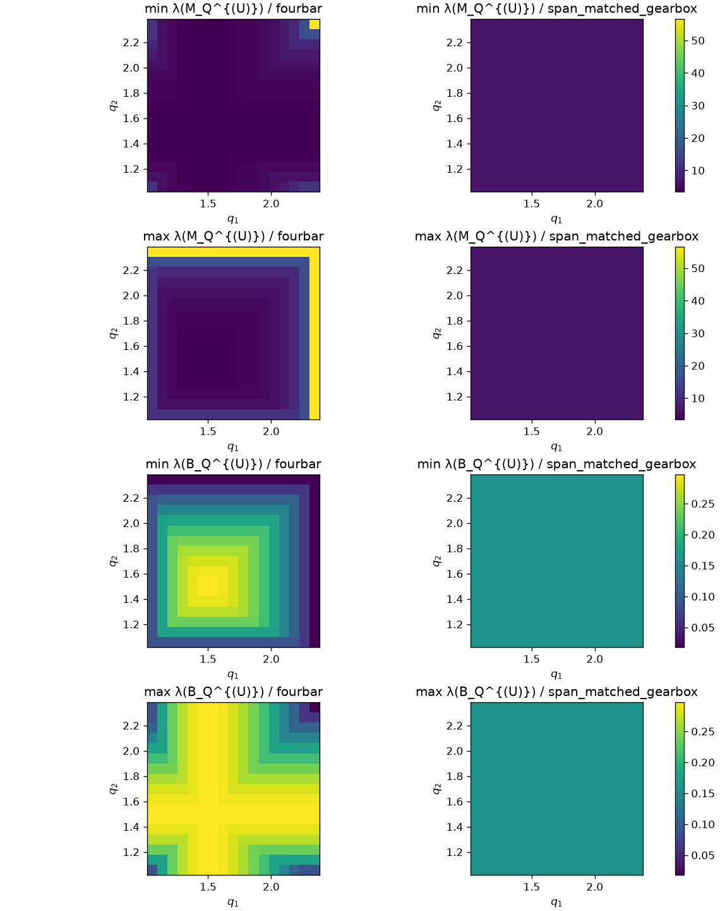
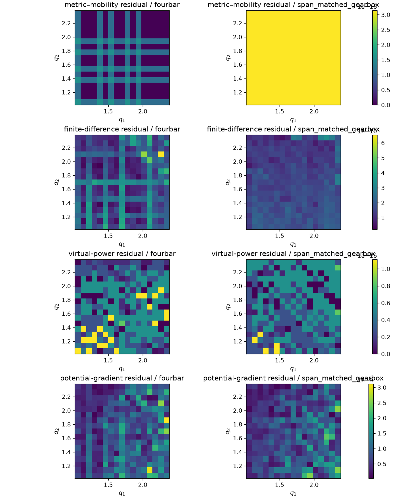

geometry-core verification; no mechanism performance inference.
Git 3d096e30145fbe09b62a9a4b61c3e79db6e52ac6
· schema v4.0.geometry_core_smoke.v1
· grid [17, 17]
· W_u identity
manifest.json · resolved_config.json · geometry_samples.jsonl · identity_residuals.json
Shared-axis q_i(u_i) and dq_i/du_i for the certified crank-rocker and its span-matched gearbox. These panels inspect the maps; they do not rank them.




| residual | fourbar max | span-matched gearbox max | all max |
|---|---|---|---|
| metric_mobility | 1.570e-16 | 3.140e-16 | 3.140e-16 |
| finite_difference | 6.531e-10 | 3.379e-10 | 6.531e-10 |
| virtual_power | 1.110e-16 | 1.110e-16 | 1.110e-16 |
| potential_gradient | 3.114e-09 | 2.587e-09 | 3.114e-09 |
Gearbox analytic check: ratios [0.4026746694860475, 0.4026746694860475]; max Jacobian residual 0.000e+00; max metric residual 8.882e-16.
